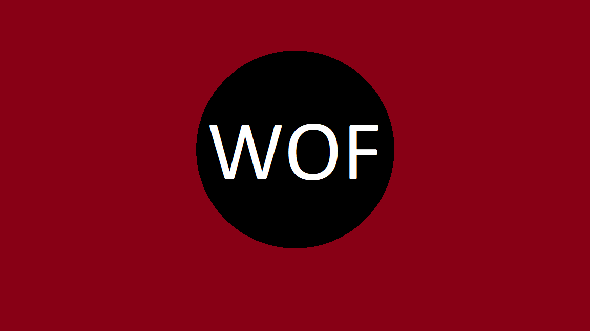

Fashion Feature.

Mckinley was March's Fashion Feature. Her focus for this fit was comformt. She is wearing a gingham pattern top paired with ripped jeans. Finishing the outfit with her Vans pulls this together as a quick, comfrotable outfit for a day at school.
Ben was April's Fashion Feature. His outfit follows suit with last month Kinely's style, looking for comfort while on the go. Layering a jacket on top of his tan shirt adds dimmension to the outfit. Wearing some rolled up black jeans brings the outfit together to go with a simple, yet effective color pallete. He finished his look with some accessorizing, some braclets and a necklace.
Mya's dynamic outfit features a lot of bright colors shined for May's Fashion Feature. The matching top and skirt have a blend of pinks, blues, and purples. Layering with a bright green sherpa jacket adds a pop to the look. Lastly adding jewlery is a staple for Mya and this outfit is no exception.
Justin's monochormatic outfit caught out attention as he was named June's Fashion Feature. With his focus being shades of blue, he started with a blue graphic hoddie layered with a blue and white flannel. He is wearing blue cargo pants and pairs them with blue and white Nike's, tying in the white accents from the hoodie adn flannel. As a last piece he wear a blue hat with white embriodery.